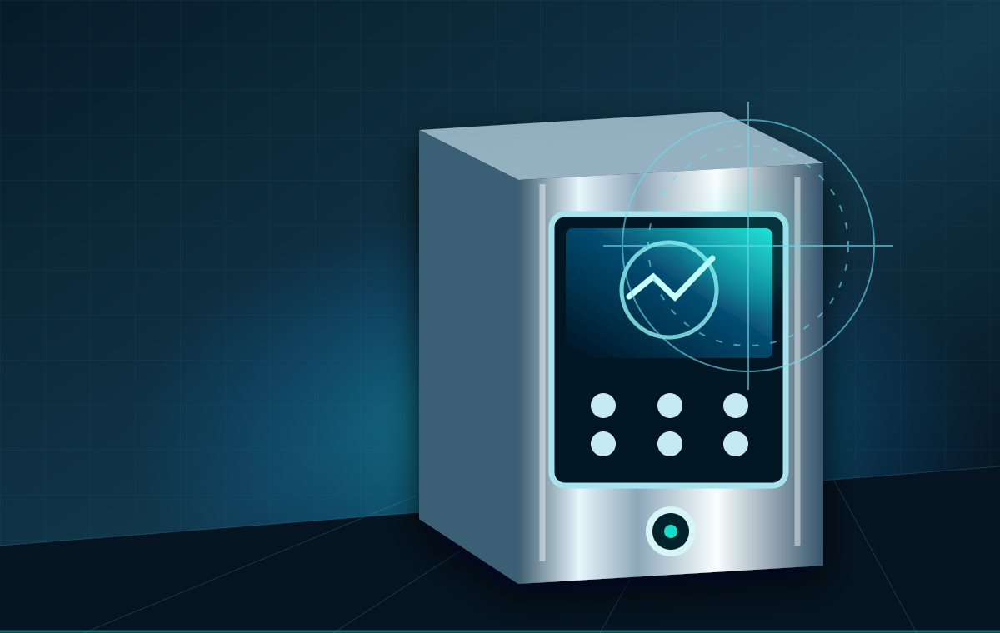
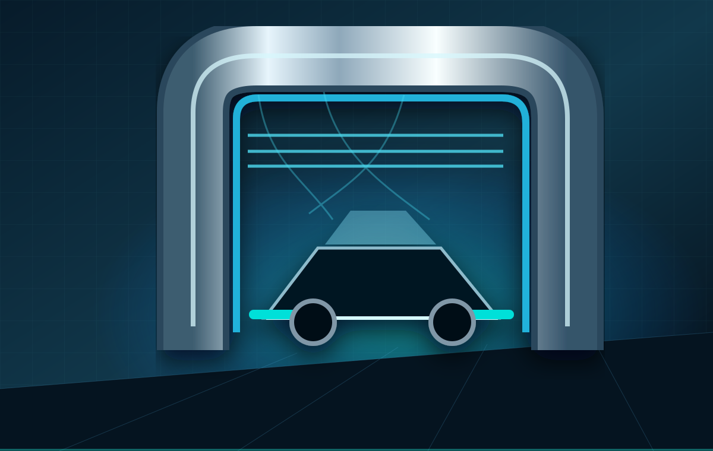
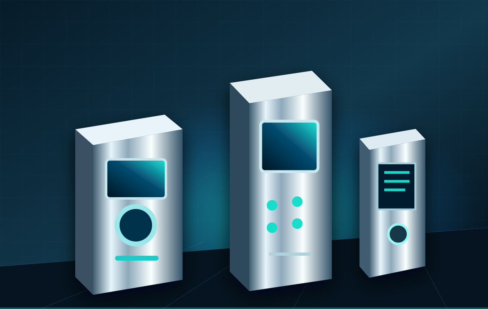

SHINOX CAR WASH SYSTEMS
以創新科技與系統整合，重新定義洗車體驗。從智慧自助洗車到自動洗車設備，打造更有效率的洗車事業。
先釐清規劃假設，再與專人討論。試算不代表收益保證。
METAL / 金屬
從設備結構到操作介面，以清楚的配置串起洗車場設備。
ENERGY / 電力
探索控制箱、儲值機與繳費設備，依場域需求討論操作及支付配置。
AIR / 氣流
從空氣噴槍到吹水設備，為不同清潔流程選擇合適的周邊配置。
WATER / 水刀
從水處理到洗車設備，整合場地與設備需求，規劃完整洗車動線。
FLUID / 化學流體
泡沫、清潔及鍍膜功能須依實際設備與最終功能配置確認。
SHINOX / EQUIPMENT SOLUTIONS

從控制、儲值到水處理，整合經營必備設備。

B2 與 M9 系列，探索適合場域的無接觸洗車方案。

吸塵、空氣、臭氧與販賣設備，完善每個服務環節。
LET’S BUILD YOUR NEXT CAR WASH